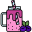

Descrição
Meu nome é Bruna de Carvalho dos Santos, tenho 24 anos e sou natural de Curitiba, cidade que moro até hoje. Aos 17 anos sai do ensino médio e comecei a cursar Engenharia Florestal pela UFPR, fiz 4 anos e meio do curso, nesse período fiz parte de um projeto que realizava trilhas com alunos do ensino fundamental ensinando um pouco mais sobre educação ambiental, também realizei uma pesquisa sobre a capacidade energética dos resíduos da pupunheira. Durante a pandemia resolvi trancar meu curso pois não estava mais me encontrando naquele meio, e então nunca mais voltei. No inicio de 2022 decidi que iria mudar de área, agora sou aluna do Curso de Desenvolvimento Web Full Stack da Labenu!
Adotei 3 pets: A Princesa (uma dog caramelo), o Zeus (um gatinho que só dorme) e a Help (uma gatinha que tem medo de tudo mas é muito ligeira).
O que mais me motiva na vida é a idéia de poder viajar e conhecer boa parte desse mundo, meu sonho é poder ver a Aurora Boreal e as Piramides de Gizé.
top 5 bônus sobre mim:
Desde pequena sempre acreditei em vida fora da terra e passava horas assistindo video sobre o assunto e o universo em geral.
Sou a doida das teorias da conspiração (ex: Avril Lavigne já morreu...)
Acompanho quase todos os campeonatos de Counter-Strike e sou apaixonada, mesmo sem nunca ter jogado uma partida.
Quando pequena meu sonho era ser jogadora de futebol, até fiz algumas aulas e participei de alguns campeonatos, mas nada demais, hoje em dia acompanho o esporte apenas da arquibancada.
Realizei uma viagem para Gramado-RS com meu namorado em 2018 só com o dinheiro dos doces que a gente vendia na universidade.
Instituições de ensino
Labenu - Curso Desenvolvimento Web Full Stack (cursando) .png)
Instituições de trabalho
Kuhlmann Tec. e Monitoramento Agrícola - Analista (atual) 
Mornings: Café da manhã o dia todo - Caixa (2020 - 2021) 
UFPR: LEB - Pesquisadora (2018-2020)
UFPR: Laboratório de Paisagismo - Monitora (2017 - 2018)
Ótica Roberto - Estagiária (2014)
FAS - Fundação de Ação Social - Estagiária (2013)